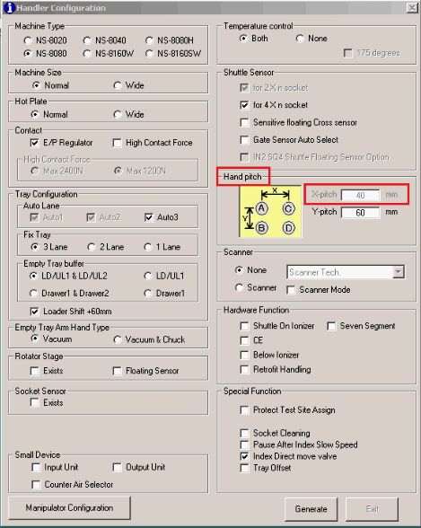
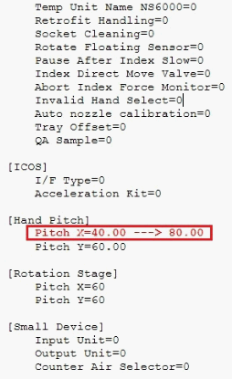

Service History
Subject: NS-8040 “The distance from the Home Sensor to the Encoder Z Phase varies significantly from the previous value” and “The arm reached the limit of motion range” error happened at input arm after start the run
Handler Model: NS-8040
Controller: RC520
Date: 18 Jul 2012
Symptom
SCS (18/07/2012 - 19/07/2012) - NS8040 HDD crashed.
Action
1. Surprisingly, when I power on the Handler, it able to boot up. At that point, all backup data were copy to the thumbdrive.
2. Did a disk error check found no issues.
3. Tried reboot again but failed. So recovery carried out using Recovery CD ver 4.0 on Epson original HDD 250GB.
4. After recovery, HMI ver was 1.9 and SPEL ver 3.11ds-sp. With the basic version tried to run the handler but unable to cos status windows showing “Please Wait”.
5. Upgrade the SPEL and HMI ver to 3.12h and M11.50-SSY respectively. Restored back the POSE data.
6. “The distance from the Home Sensor to the Encoder Z Phase varies significantly from the previous value” error happened after carried out Homing. Mcorg was done for all robot axis and problem solved.
7. “The arm reached the limit of motion range” error happened at input arm after start the run. Restored the Manipulator data and tried again but failed. Motor calibration carried out, restored system data and compared the robot range values with other handler found values the same. Tried to open up the range values and tried again but problem still persisted.
8. Did a 2nd recovery and found out no data at the robot parameter and manipulator. Restored the system data and All Project data. Mcorg carried out after “The arm reached the limit of motion range” error happened. But “The arm reached the limit of motion range” error happened at input arm still after start the run.
9. Customer required trying out their 120GB HDD. Recovery carried out but after reboot, System boot up disk error occurred.
10. Next day did a recovery using Recovery CD ver 2.0 on 250GB but it turn out to be blue screen after reboot.
11. Tried another round of recovery using Recovery CD ver 4.0. After recovery, HMI and SPEL were upgraded to ver11.50-SSY and ver3.12h respectively. After upgrading the software, HMI unable to launch. Tried to start the SPEL first by clicking on the icon manually, to error occurred. Followed by launching HMI but unable to.
Cause
Recovery CD Ver 4.0 (FD11S057, 04/28/2011) for NS-8000 4 Hands has a bug.
NS8000 Handler which using the new controller (Black) RC520 S/N: 03-3**** has problem when doing recovery using Recovery CD Ver 4.0 (04/28/2011) FD11S057 for SPI-IB945 CPU Board.
After recovery, “The arm reached the limit of motion range” error happened at Input/Output arms.
Only POSE and SYSTEM data were restored at the point of recovery.
Tried open up the range for both input/output arms but result still the same.
After recovery, the Hand Pitch at Handler Configuration for X-pitch was at 40mm. these pitch couldn’t be changed even HMI was reinstalled.
The only way to changed was to through the handler.def from the config file and the X-pitch value should be 80mm.
or copy back the Config folder.
Use Recovery CD Ver 4.1 (FD12S019, 02/13/2012) for 4 Hands to solve the problem.
Refer 0405-NS8K.

